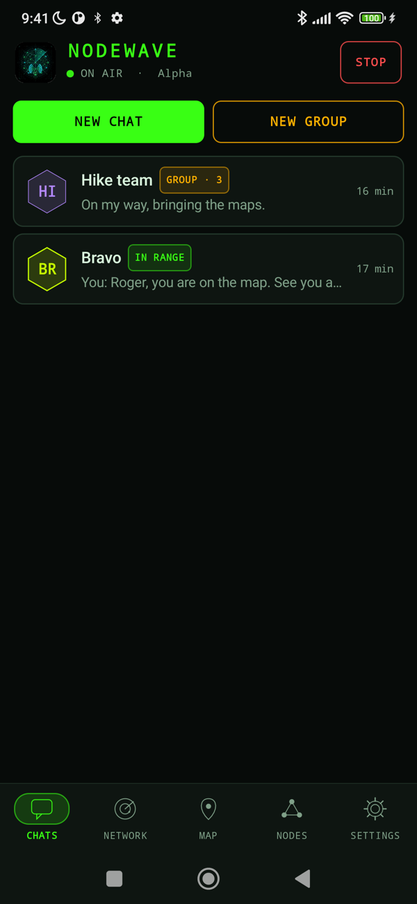
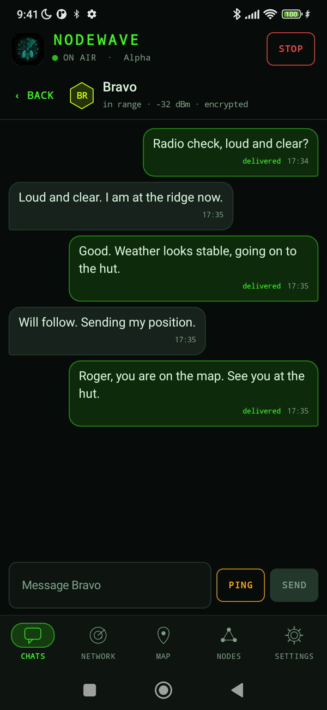
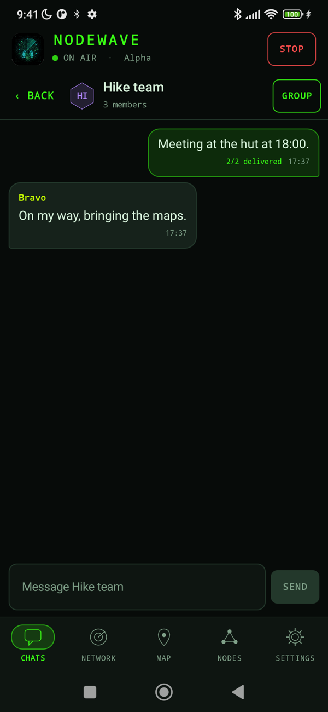
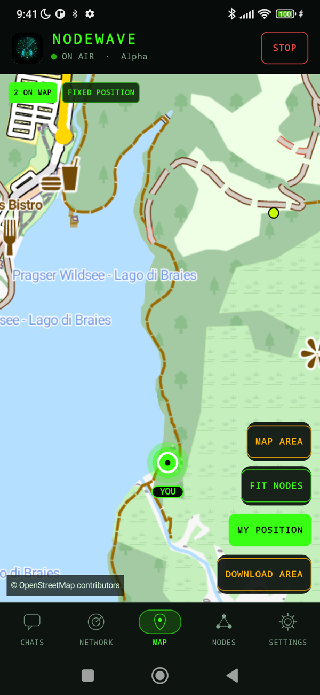
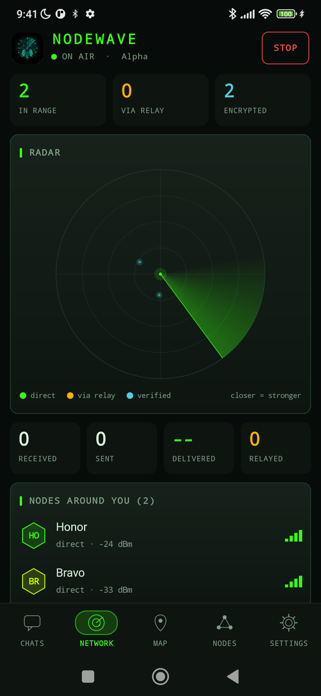
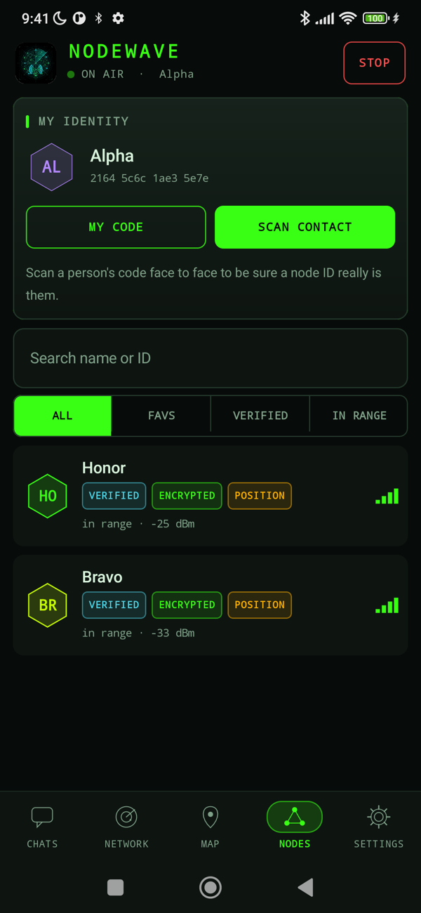
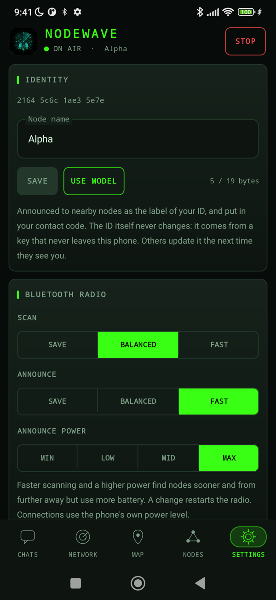

NODEWAVE
An off-grid mesh walkie-talkie for Android. Phones talk to each other directly over Bluetooth Low Energy: no internet, no servers, no Google services.
Download Source codePre-release software. Android 10 or later.
In use
Screenshots from real phones talking to each other over Bluetooth, no network involved. The two nodes in the map are placed on a hiking trail for the picture.







What it does
Mesh relay
Messages hop across intermediate phones to reach nodes out of direct range, with delivery receipts that travel back the same way.
Encrypted end to end
Forward-secret session keys between each pair of nodes. Relays carry what they cannot read.
Verified contacts
Scan a QR code in person to confirm who a node ID belongs to; the key is then pinned.
Voice messages
Hold the microphone and talk (up to 15 s). The clip travels encrypted in chunks, is resent if one is lost, and plays in the chat. Opus on Bluetooth, Codec2 for slow links.
Photos, fast
Photos travel over a Wi-Fi Direct link that Bluetooth sets up by itself: about 120 KB in a third of a second, no confirmation to tap. Stripped of location data, and refused on slow links.
Group chat
Up to 8 people, sealed separately for every member, managed by an admin.
Offline maps
See nodes on a vector map that lives on the phone: one Mapsforge file for a whole country, downloaded once.
Keeps listening
The radio runs as a foreground service, with the screen off or the app closed.
Security, honestly
Only the standard Java/Android cryptography is used: P-256 signed ephemeral key exchange, HKDF-SHA256 and AES-256-GCM. Session keys live in memory only and are replaced every hour. The design has not been independently audited, and the limitations (visible metadata, trust on first contact) are written down in the security notes.
Get it
Debug-signed APKs are attached to each release. To build it yourself:
git clone https://github.com/sputlab/nodewave cd nodewave ./gradlew assembleDebug
On Android 10 and 11, location services must be on or the system returns no Bluetooth scan results. NodeWave is built to be F-Droid ready; it has no proprietary dependencies.